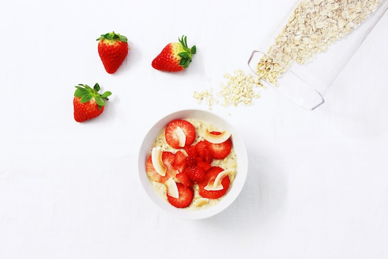

Overnight Oats

Description
This recipe is absolutely perfect for hectic weeks. In the evening, it takes just a few minutes to make, then you've got a delicious, healthy breakfast ready to eat in the morning. And -- everyone in the family can make it to taste by adding additional toppings or mix-ins.
Ingredients
This recipe makes 4 servings. Use rolled or regular oats, not quick or instant, as they are too fine and will turn to mush. Similarly, don't use steel-cut, as they will not soften enough.
- 1 cup rolled oats
- 1 cup milk of choice
- 75 mL (1/2 cup) Greek yogurt
- 2 tbsp. chia seeds
- 2 tbsp. sweetener (honey, maple or agave syrup, etc.)
- 1/2 tsp. vanilla or almond extract
Steps
- Combine all ingredients.
- You can add mix-ins or toppings now, or wait until the morning. If you do it now, keep in mind that crunchy things will soften and fruit may water a bit.
- Cover and refrigerate overnight.
- In the morning, add a bit more milk if the mixture is too thick for you.
Notes
- You can store the oats in the fridge for up to five days -- the base recipe anyway. If you choose to add mix-ins or toppings during your initial prep, consider whether they will last that long.
- Our favorite mix-ins are dessicated (shredded) coconut, peanut or almond butter.Our favorite toppings are berries, almond slivers (slices), chocolate chips and granola.
Credits